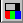
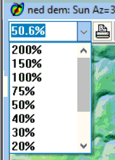

Satellite Image Analysis Tutorial in MICRODEM
Key learning outcomes
- see resolution in bands:
- as wavelength goes up, energy and spatial resolution goes down
(bands 10 and 11 TIR compared to 2-5 VIS and NIR)
- PAN: as bandwidth goes up, so does detail and spatial resolution,
because you are combining R-G-B in one band, so there is roughly three
times the energy (band 8)
- low resolution of the TIR (bands 10 and 11)
-
true and false color--combination of 3 colors
- True color uses the RGB collected by the satellite for the same
colors on the display
- False colors uses the NIR/red/green, because NIR has more valuable
information than the blue, except in rare cases likes looking at shallow
water where blue penetrates and NIR is completely absorbed.
- To display more than one IR band, the colors become surreal because
reflectances in the NIR are not intuitive to us, but may display
interesting relationships and can be very psychedelic
- Importance NIR (band 5)--land-water-vegetation differentiation

Band: select multiband or single
band, and choose among the available bands, and
contrast enhancement--highlight the data of most interest- Electromagnetic radiation
 |
|
This shows transmission (albedo). Most satellite bands are in
transmission windows, and not absorption bands. Exceptions, like
Band 9 of the OLI, are used to measure the atmospheric concentration
of the gas absorbing at that wavelength. |
Go to File,
Introductory
tutorials, Annapolis TM8 scene
This will download and open a Landsat 8
scene, which is about 1 GB compressed
and will uncompress to about 2 GB. Landsat is a medium resolution (30 m)
satellite system
-
Subset
& zoom. This scene is about 6000x6000 pixels and
will not fit on screen; by default it will be severely
subsampled. Zoom into a smaller region to see the true
resolution of the sensor.
-

Set
100% data shown or 1:1
map view (best resolution view of
the data, but you might run out of memory unless you subset first, and
using the scroll bars can be unwieldly)
- The next options are tabs on the same form:
-
Band: select multiband or single
band, and choose among the available
bands. You should
look at the true color, and false color dominated by the near
IR.
Contrast: changes are
done on the same form.
- Image histograms
Complete image analysis options.
Some will require additional data prep work.
Key Remote Sensing Options in MICRODEM
Last revision 8/20/2020